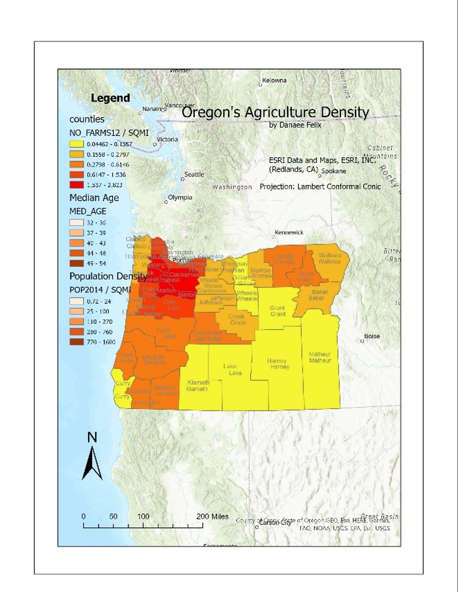
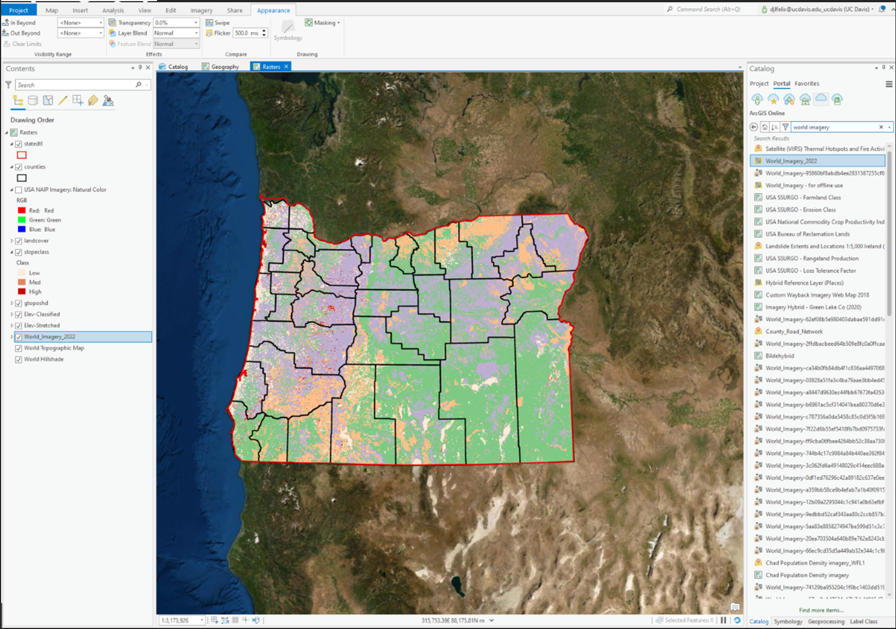
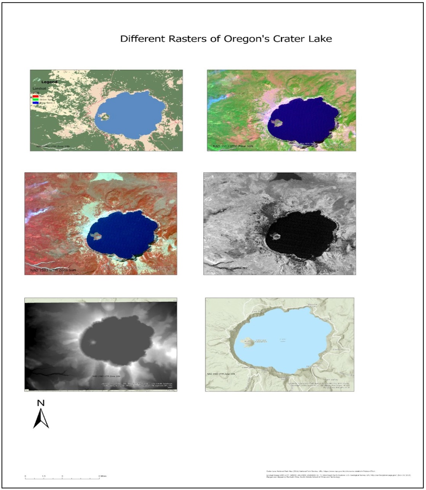

Oregon's Uniqueness
Let's learn a bit about Oregon!
Volcanoes?!
In the image above, we have a visual representation of the volcanic activity in Oregon. This was the most interesting aspect of the project for me as I was unaware that the state had volcanoes, let alone active volcanoes. When looking at the Contents pane on the left side of the image, the size of a red triangle is the number of active volcanoes located in a specific area.
Safe to say that the location of these active volcanoes are not very close to the major cities in Oregon. another interesting thing about this analysis is that these active volcanoes are located in areas where the median ages are higgher, whereas the areas of lower median ages are where the major cities are, thus, from a statistic standpoint, younger people live further away from the volcanoes.
Image Gallery

A map of the agriculture density in Oregon according to data retrieved directly from ArcGIS Online.

This image shows the physiography of Oregon. The physiography consists of raster dataset that includes slope class, elevations, the distribution of counties in the state, the line shape of the state, and world imagery to provide an aerial photography effect.

This is a multi-frame map of the Crater Lake. The purpose of this assignment was learning to manage raster data. Each image reveals a different raster dataset of the Crater Lake, thus revealing and distinguishing different types of information from the same site.